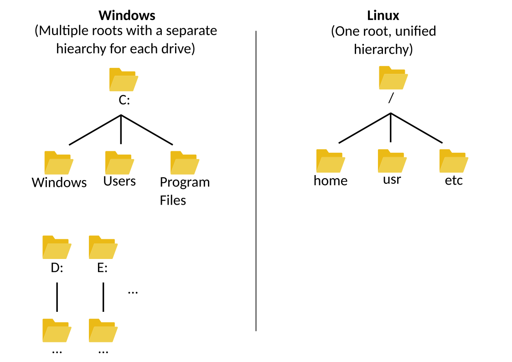

HPC System Guide
Introduction
High-Performance Computing (HPC) clusters are powerful systems used for running large-scale scientific and engineering tasks. Most HPC clusters run on Linux, and you’ll interact with them mainly through the command line. This guide will help you get started with the basics: how to move around the system, use software modules, and run jobs.
Before we dive in, let’s go over a few important terms.
What is a Shell?
A shell is a program that lets you talk to the operating system by typing commands. You use a shell through a terminal (a command-line interface) or a graphical user interface (GUI).
Examples:
On Windows, the GUI is called File Explorer (
explorer.exe), and the terminals are Command Prompt (cmd.exe) and PowerShell.On macOS, the GUI is Finder, and the terminal is called Terminal.
On Linux, you usually use a terminal with a shell like bash.
Most HPC systems use bash as the default shell, and that’s what you’ll be using when you log in.
What is case-sensitivity?
A case-sensitive system is one that distinguishes between uppercase and lowercase letters in text. If you are a Windows user you may have noticed that a letter is treated the same whether it is lower-case or upper-case. For example: “hello”, “HeLlo”, and “HELLO” are all the same. Thus, Windows is NOT a case-sensitive system.
On the other hand, macOS and Linux systems ARE case-sensitive. This is an important distinction because when you navigate through folders, create files, etc., in our systems you MUST ALWAYS USE the right cases.
Connecting to the Cluster
To use the cluster, you’ll connect to it from your own computer using a tool called SSH (Secure Shell). SSH lets you open a remote session on the cluster so you can run commands as if you were sitting in front of it.
SSH is available by default on:
Windows PowerShell (use
sshorssh.exe)macOS Terminal
Linux Terminal
> ⚠️ If you’re on Windows, use PowerShell, not Command Prompt.
To connect, use this command:
ssh your_username@cluster_name.rc.louisville.edu
Replace:
your_usernamewith your actual HPC username.cluster_namewith the name of the cluster (e.g.,zurada).
Example:
ssh jd01@zurada.rc.louisville.edu
Once connected, you’ll see a prompt like this:
[jd01@login01 ~]$
Here’s what it means:
jd01- Your username.login01- The login node you’re connected to.~- Your home directory (similar toC:\Users\yournameon Windows).
We’ll explain more about the Linux file system in the next section.
Understanding Filesystems
What is a Filesystem?
A filesystem is the method an operating system uses to organize and store data on storage devices such as hard drives or SSDs. It defines how files and directories are named, stored, accessed, and structured. Most modern operating systems use a hierarchical filesystem, where files are organized in a tree-like structure starting from a root directory.
Filesystem Hierarchies
All major operating systems—Linux, Windows, and macOS—use hierarchical filesystems, but they differ in how the root and subdirectories are structured.
{kind=link}
Linux and macOS
Both Linux and macOS have a single root directory, represented by the forward slash:
/.All other directories branch off from this root.
Common directories under
/include:/usr- Contains installed applications and system utilities./home- User directories; similar toC:\Usersin Windows./boot- Boot loader files./dev- Device files (e.g., drives, network interfaces)./etc- System configuration files./lib- Shared system libraries.
Windows
Windows uses multiple root directories, each represented by a drive letter (e.g.,
C:,D:).Each drive has its own independent hierarchy.
The primary system drive (usually
C:) contains:C:\Windows- Most system files and configurations.C:\Program FilesandC:\Program Files (x86)- Installed applications.C:\Users- User directories, analogous to Linux’s/home.
{kind=link}
{kind=link}
{kind=link}
Using Modules
HPC environments use environment modules to manage software versions.
Basic commands:
module avail- List available modules.module load <module-name>- Load a module.module list- Show currently loaded modules.module unload <module-name>- Unload a module.module purge- Unload all modules.
Example:
module load gcc/11.2.0
module load python/3.10.4
Note: Always load required modules in your job scripts to ensure consistency.